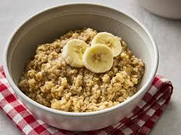

Oatmeal

Oatmeal is a rather soggy wet mass that is consumed exclusively for the nutritionsl value that it has and no other reason.
Ingredients
- 1 teaspoon dark brown sugar
- 1 teaspoon maple syrup
- 2 tablespoons chopped pecans
- 1/8 teaspoon cinnamon
Steps
- In a small saucepan, bring the water to a boil.
Reduce the heat to low and pour in the oats. Cook, stirring occasionally, until the oats are soft and have absorbed most of the liquid, about 5 minutes.
- Add the milk, remove from heat, cover and let stand for 2-3 minutes.
- Stir in the toppings and let rest for a few minutes to cool. Thin with a little more milk, if desired. Serve warm.